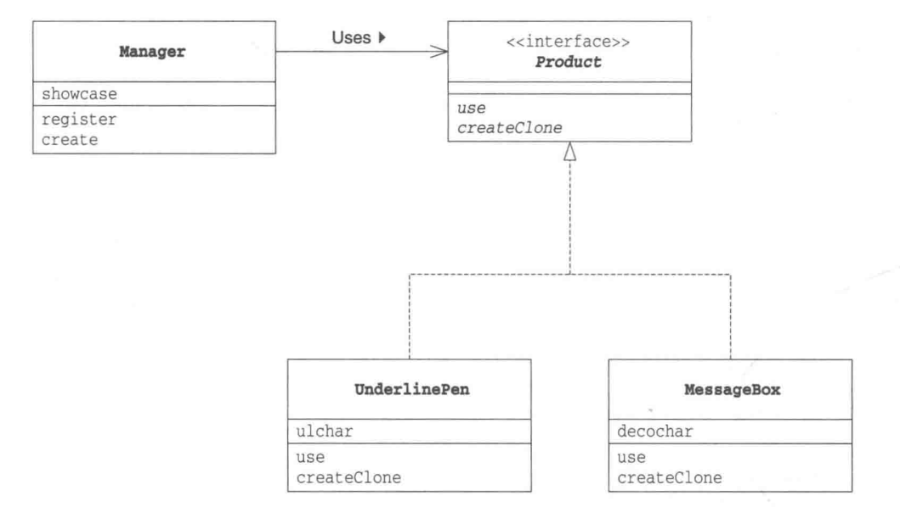
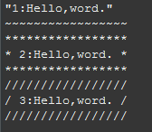

2017-12-26设计模式(一)————————prototype学习笔记
结构
prototype模式是设计一个实例模板，以便于实例的复制。之后创建新的实例就不用再依赖于new关键字，实质是通过java中Cloneable接口中的clone方法创建实例的副本。

说明:客户端程序(Manager)依赖于原型实例(Product),对象的实现(UderlinePen和MessageBox)也依赖于原型的。只要实现子类的createClone就能创建子类对象，不用再依赖于具体实现。
Manager类
public class Manager {
private HashMap
public void register(String name,Product poto) {//注册对象
showcase.put(name, poto);
}
public Product create(String potoname) {
Product p = (Product)showcase.get(potoname);
return p.createClone();//返回 对应子类 对象的实例
}
}
Product类
public interface Product extends Cloneable{
public abstract void use(String s);//实例的使用方法
public abstract Product createClone();//生成副本方法
}
UderlinePen类
public class UnderlinePen implements Product{
private char ulchar;
public UnderlinePen(char ulchar) {
this.ulchar = ulchar;
}
@Override
public void use(String s) {
int length = s.getBytes().length;
System.out.println("\""+s+"\"");
System.out.print("");
for(int i=0;i<(length+4);i++) {
System.out.print(ulchar);
}
System.out.println("");
}
@Override
public Product createClone() {
Product p = null;
try {
p=(Product)clone();
}catch (CloneNotSupportedException e) {
e.printStackTrace();
}
return p;
}
}
MessageBox类
public class MessageBox implements Product{
private char decochar;
public MessageBox(char decochar) {
this.decochar = decochar;
}
@Override
public void use(String s) {
int length = s.getBytes().length;
for(int i=0;i<=(length+4);i++) {
System.out.print(decochar);
}
System.out.println(" ");
System.out.println(decochar+ " " + s + " " + decochar);
for(int i=0;i<(length+4);i++) {
System.out.print(decochar);
}
System.out.println("");
}
@Override
public Product createClone() {
Product p = null;
try {
p=(Product)clone();
}catch (CloneNotSupportedException e) {
e.printStackTrace();
}
return p;
}
}
Main类
public static void main(String[] args) {
//准备
Manager manager = new Manager();
UnderlinePen upen = new UnderlinePen('~');
MessageBox mbox = new MessageBox('*');
MessageBox sbox = new MessageBox('/');
manager.register("strong message", upen);//将对象和键id注册到manager中管理
manager.register("warning box", mbox);
manager.register("slash box", sbox);
//生成
Product p1 = manager.create("strong message");//通过对应的key进行创建子类
p1.use("1:Hello,word.");//实现子类的调用
Product p2 = manager.create("warning box");
p2.use("2:Hello,word.");
Product p3 = manager.create("slash box");
p3.use("3:Hello,word.");
}
输出结果

如上，我们是通过在client中的对实例模板的register对方法进行注册后，通过create方法获取到实例子类的实现，得以创建出这个实例的"副本"，最后调用use方法调用自身的具体实现，实现复制的。这个模式的好处就是不用让我们频繁的通过new进行创建实例，而是通过clone方法实现此类的克隆。因为克隆一个原型就类似于实例化一个类。但是，这个模式的需要一个全局的掌控，这也是需要我们去探索去联系的。
关键字词：设计模式、prototype、克隆